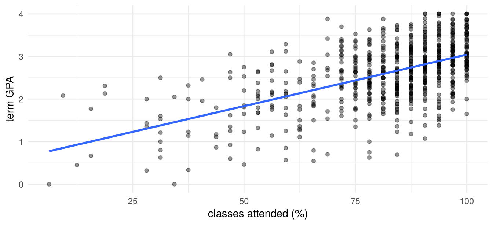

install.packages(c("sandwich", "lmtest", "ggplot2")) # once
library(sandwich) # every sessionAppendix B — A Short R Primer
\[ \newcommand{\bm}[1]{\boldsymbol{#1}} \newcommand{\btheta}{\boldsymbol{\theta}} \newcommand{\bbeta}{\boldsymbol{\beta}} \newcommand{\bgamma}{\boldsymbol{\gamma}} \newcommand{\bx}{\boldsymbol{x}} \newcommand{\by}{\boldsymbol{y}} \newcommand{\bX}{\boldsymbol{X}} \newcommand{\bR}{\boldsymbol{R}} \newcommand{\br}{\boldsymbol{r}} \newcommand{\bh}{\boldsymbol{h}} \newcommand{\bz}{\boldsymbol{z}} \newcommand{\bZ}{\boldsymbol{Z}} \newcommand{\bW}{\boldsymbol{W}} \newcommand{\bA}{\boldsymbol{A}} \newcommand{\bV}{\boldsymbol{V}} \newcommand{\bu}{\boldsymbol{u}} \newcommand{\bw}{\boldsymbol{w}} \newcommand{\bpsi}{\boldsymbol{\psi}} \newcommand{\balpha}{\boldsymbol{\alpha}} \newcommand{\bdelta}{\boldsymbol{\delta}} \newcommand{\bmu}{\boldsymbol{\mu}} \newcommand{\bg}{\boldsymbol{g}} \newcommand{\bS}{\boldsymbol{S}} \newcommand{\bD}{\boldsymbol{D}} \newcommand{\bI}{\boldsymbol{I}} \newcommand{\E}{\mathbb{E}} \newcommand{\Var}{\operatorname{Var}} \newcommand{\AVar}{\operatorname{Avar}} \newcommand{\cvp}{\xrightarrow{\;p\;}} \newcommand{\cvd}{\xrightarrow{\;d\;}} \newcommand{\iid}{\overset{\text{iid}}{\sim}} \newcommand{\KLIC}{\operatorname{KLIC}} \newcommand{\pd}[2]{\frac{\partial #1}{\partial #2}} \]
This appendix collects the R tools used in the computer tutorials. It assumes that you have used R or another statistical language before; it is a reference, not a course. Wickham, Çetinkaya-Rundel, and Grolemund (2023) is a free introduction to data handling in R, and the R documentation (?function in the console) is the reference for every function used below. Computer tutorial 0 at the end of the appendix practises the material.
B.1 Setting up
Software. Install R (https://cran.r-project.org) and RStudio (https://posit.co/download/rstudio-desktop/). RStudio is an editor around R; the computations are done by R.
Projects and scripts. Keep everything for this course in one folder with a subfolder data. In RStudio, create a project for this folder (File → New Project → Existing Directory). Opening the .Rproj file sets the working directory to the project folder, so data can be read with relative paths such as "data/mroz.csv", and the code runs unchanged on another computer. Avoid setwd("C:/Users/...") in scripts for the same reason. Write code in scripts (.R) or Quarto documents (.qmd), not in the console, so that every result can be reproduced.
Packages. A package is installed once and loaded in every session:
The tutorials use the following packages.
| Package | Used for | Tutorials |
|---|---|---|
sandwich, lmtest |
robust variance matrices, coefficient tests | 1, 2, 5 |
MASS |
negative binomial data | 1 |
nleqslv |
solving systems of moment equations | 2 |
AER |
instrumental variables (ivreg) |
2 |
boot |
bootstrap | 2 |
statmod, randtoolbox (optional) |
Gauss–Hermite nodes, Halton sequences | 3 |
ggplot2 |
graphics | 4, 5 |
glmnet, randomForest |
lasso, ridge, elastic net, random forests | 5 |
B.2 Objects
Everything in R is an object, created with the assignment operator <-.
x <- c(2, 4, 6, 8) # numeric vector
length(x); x[2]; x[-1]; x[x > 3]#> [1] 4#> [1] 4#> [1] 4 6 8#> [1] 4 6 8s <- seq(0, 1, by = 0.25) # also 1:10, rep(0, 5)
b <- x > 3 # logical vector
sum(b); mean(b) # TRUE counts as 1#> [1] 3#> [1] 0.75Indexing starts at 1. x[-1] drops the first element, and indexing with a logical vector keeps the elements where it is TRUE. Arithmetic is element by element: x * x squares each element, sum(x * x) is the inner product.
Matrices have two indices, [row, column]; leaving one index empty selects all rows or columns.
A <- matrix(1:6, nrow = 2) # filled column by column
A; dim(A); A[2, ]; A[, 3]#> [,1] [,2] [,3]
#> [1,] 1 3 5
#> [2,] 2 4 6#> [1] 2 3#> [1] 2 4 6#> [1] 5 6cbind(1, x) # bind columns; the 1 is recycled#> x
#> [1,] 1 2
#> [2,] 1 4
#> [3,] 1 6
#> [4,] 1 8Data frames are tables whose columns can have different types; columns are accessed with $ or by name. Lists collect objects of any type and are what most estimation functions return. Factors are categorical variables; in a regression a factor is expanded into dummies automatically.
df <- data.frame(id = 1:4, x = x, group = factor(c("a", "b", "a", "b")))
df$x; df[df$group == "a", ]; nrow(df)#> [1] 2 4 6 8#> id x group
#> 1 1 2 a
#> 3 3 6 a#> [1] 4res <- list(estimate = 1.5, se = 0.2)
res$estimate#> [1] 1.5Missing values are coded NA. Most summary functions return NA if any value is missing unless called with na.rm = TRUE; complete.cases(df) marks rows without missing values.
B.3 Data import and description
All data sets of the course are comma-separated files (.csv), read with read.csv.
attend <- read.csv("../data/attend.csv") # in your project: "data/attend.csv"
str(attend) # variables and types#> 'data.frame': 680 obs. of 5 variables:
#> $ termgpa: num 3.19 2.73 3 2.04 3.68 ...
#> $ priGPA : num 2.64 3.52 2.46 2.61 3.32 ...
#> $ ACT : int 23 25 24 20 23 26 21 22 24 21 ...
#> $ attend : num 84.4 68.8 93.8 96.9 100 ...
#> $ soph : int 1 0 0 1 1 1 0 1 0 1 ...summary(attend)#> termgpa priGPA ACT attend
#> Min. :0.000 Min. :0.857 Min. :13.00 Min. : 6.25
#> 1st Qu.:2.138 1st Qu.:2.190 1st Qu.:20.00 1st Qu.: 75.00
#> Median :2.670 Median :2.560 Median :22.00 Median : 87.50
#> Mean :2.601 Mean :2.587 Mean :22.51 Mean : 81.71
#> 3rd Qu.:3.120 3rd Qu.:2.942 3rd Qu.:25.00 3rd Qu.: 93.75
#> Max. :4.000 Max. :3.930 Max. :32.00 Max. :100.00
#> soph
#> Min. :0.0000
#> 1st Qu.:0.0000
#> Median :1.0000
#> Mean :0.5765
#> 3rd Qu.:1.0000
#> Max. :1.0000Useful functions for a first look: head, table (frequencies), aggregate or tapply (statistics by group), cor, subset, and write.csv to save a data frame.
tapply(attend$termgpa, attend$soph, mean) # mean term GPA by year#> 0 1
#> 2.487417 2.684449round(cor(attend[, c("termgpa", "attend", "priGPA")]), 3)#> termgpa attend priGPA
#> termgpa 1.000 0.560 0.653
#> attend 0.560 1.000 0.427
#> priGPA 0.653 0.427 1.000B.4 Matrix algebra and OLS by hand
The operators and functions needed for estimators in matrix form:
| R | Mathematics |
|---|---|
A %*% B |
matrix product \(\bA\bm B\) |
t(A) |
transpose \(\bA'\) |
crossprod(X), crossprod(X, y) |
\(\bX'\bX\), \(\bX'\by\) |
solve(A), solve(A, b) |
\(\bA^{-1}\), solution of \(\bA\bm z=\bm b\) |
diag(A), diag(k) |
diagonal of \(\bA\), identity matrix \(\bI_k\) |
outer(x, y) |
matrix with elements \(x_iy_j\) |
To compute the OLS estimator \(\hat\bbeta=(\bX'\bX)^{-1}\bX'\by\) and its heteroskedasticity-robust variance \((\bX'\bX)^{-1}\big(\sum_i\hat u_i^2\bx_i\bx_i'\big)(\bX'\bX)^{-1}\):
y <- attend$termgpa
X <- cbind(1, attend$attend, attend$priGPA, attend$ACT)
XtXi <- solve(crossprod(X))
bhat <- XtXi %*% crossprod(X, y)
u <- drop(y - X %*% bhat)
meat <- crossprod(X * u) # sum of u_i^2 x_i x_i'
se_rob <- sqrt(diag(XtXi %*% meat %*% XtXi))
cbind(bhat = drop(bhat), se_rob)#> bhat se_rob
#> [1,] -1.06032875 0.182373039
#> [2,] 0.01741182 0.001670940
#> [3,] 0.57473590 0.048226432
#> [4,] 0.03340267 0.006457915X * u multiplies row \(i\) of \(\bX\) by \(\hat u_i\), so crossprod(X * u) equals \(\sum_i\hat u_i^2\bx_i\bx_i'\) without a loop. solve(crossprod(X), crossprod(X, y)) solves the normal equations directly, which is numerically more stable than inverting. The same results from the standard functions:
library(sandwich); library(lmtest)
fit <- lm(termgpa ~ attend + priGPA + ACT, data = attend)
coeftest(fit, vcov = vcovHC(fit, type = "HC0"))#>
#> t test of coefficients:
#>
#> Estimate Std. Error t value Pr(>|t|)
#> (Intercept) -1.0603288 0.1823730 -5.8141 9.402e-09 ***
#> attend 0.0174118 0.0016709 10.4204 < 2.2e-16 ***
#> priGPA 0.5747359 0.0482264 11.9174 < 2.2e-16 ***
#> ACT 0.0334027 0.0064579 5.1724 3.049e-07 ***
#> ---
#> Signif. codes: 0 '***' 0.001 '**' 0.01 '*' 0.05 '.' 0.1 ' ' 1HC0 is the formula above; the default HC3 applies a small-sample correction.
B.5 Functions, loops and simulations
A function takes arguments and returns the value of its last expression (or of return()).
ols <- function(y, X) {
b <- solve(crossprod(X), crossprod(X, y))
u <- drop(y - X %*% b)
list(coef = drop(b), sigma2 = sum(u^2) / (nrow(X) - ncol(X)))
}
ols(y, X)$coef#> [1] -1.06032875 0.01741182 0.57473590 0.03340267Repeating a computation is done with for loops or, more compactly, with sapply (apply a function to each element of a vector and simplify the result) and replicate (evaluate an expression many times). A Monte Carlo study always fixes the seed with set.seed so that the results can be reproduced. A template that is used throughout the tutorials:
set.seed(1)
one_draw <- function(n) {
x <- rnorm(n); y <- 1 + 2 * x + rexp(n) - 1 # skewed, mean-zero errors
coef(lm(y ~ x))[2]
}
est <- replicate(1000, one_draw(50))
c(mean = mean(est), sd = sd(est))#> mean sd
#> 1.9998029 0.1520735Random numbers: rnorm, runif, rbinom, rexp, rpois, sample; the corresponding densities, cdfs and quantiles start with d, p and q (e.g. dnorm, pnorm, qnorm).
B.6 Optimisation
Maximum likelihood and GMM require numerical optimisation. optim minimises a function, so we pass the negative log-likelihood. With method = "BFGS" it uses the gradient (numerical if not supplied), and hessian = TRUE returns the Hessian at the optimum, whose inverse estimates the variance of the ML estimator (Chapter 1).
As an example, the normal linear regression model has log-likelihood \(\sum_i\{-\frac12\ln(2\pi\sigma^2)-\frac{(y_i-\bx_i'\bbeta)^2}{2\sigma^2}\}\). We estimate \(\ln\sigma\) instead of \(\sigma\) so that the parameter is unrestricted:
negll <- function(theta, y, X) {
k <- ncol(X); b <- theta[1:k]; s <- exp(theta[k + 1])
-sum(dnorm(y, mean = X %*% b, sd = s, log = TRUE))
}
start <- c(rep(0, ncol(X)), 0)
opt <- optim(start, negll, y = y, X = X, method = "BFGS", hessian = TRUE,
control = list(maxit = 500, reltol = 1e-12))
opt$convergence # 0 = converged#> [1] 0round(cbind(ML = opt$par[1:4], OLS = coef(fit)), 4)#> ML OLS
#> (Intercept) -1.0603 -1.0603
#> attend 0.0174 0.0174
#> priGPA 0.5747 0.5747
#> ACT 0.0334 0.0334Always check opt$convergence, try different starting values, and compare with a closed-form or built-in estimator where one exists. Scaling matters: if regressors differ in magnitude by several orders, rescale them or the optimiser may stop early. For systems of equations (just-identified moment conditions) nleqslv::nleqslv solves \(\bar{\bm g}(\btheta)=\bm 0\) directly.
B.7 Graphics
Base R graphics are quick for checks; ggplot2 gives better results for reports.
library(ggplot2)
ggplot(attend, aes(attend, termgpa)) +
geom_point(alpha = 0.4) +
geom_smooth(method = "lm", se = FALSE) +
labs(x = "classes attended (%)", y = "term GPA") +
theme_minimal()
Base equivalents: hist(x), plot(x, y), lines, abline(fit), par(mfrow = c(1, 3)) for several panels.
B.8 Good practice
- Start each script with
library()calls and, for simulations,set.seed(). - Use relative paths within a project.
- Write small functions instead of copying code, and check each one on a case where you know the answer.
- Compare hand-coded estimators with the built-in function before using them in a simulation.
- Comment what the code does and why, not how R works.
- A Quarto document (
.qmd) combines text, code and output in one file; the lecture notes and the tutorials are written this way.
B.9 Computer tutorial 0
Learning goals. Organise an R project; import, describe and subset data; compute OLS, its standard errors and a maximum likelihood estimator by hand and check them against built-in functions; write a small Monte Carlo study.
Packages. sandwich, lmtest. Data. attend.csv from the data sets of Wooldridge (2020): 680 students in an intermediate microeconomics course.
| Variable | Description |
|---|---|
termgpa |
GPA for the term, from 0 (worst) to 4 (best); a student passes if termgpa \(\ge1\) |
priGPA |
cumulative GPA prior to the term |
ACT |
ACT score (university entrance test) |
attend |
percentage of classes attended |
soph |
= 1 if the student is a sophomore (second year), 0 if first year |
B.9.1 Problem 1: Data handling
Create a project folder with a subfolder
data, saveattend.csvthere, and create an RStudio project and a script for this tutorial.Import the data as a data frame
attend. Check the number of observations, the variable types and whether there are missing values.Extract
termgpaas a numeric vector in two ways: from the data frame and from the data converted to a matrix. Create it also as an \(n\times1\) and a \(1\times n\) matrix, and check withidentical()that converting back gives the original vector.Report descriptive statistics. Draw a histogram of
termgpawith a title and an axis label, and a scatter plot oftermgpaagainstattend. Compute the correlation matrix oftermgpa,attend,priGPAandsoph. What do you learn?Create a dummy
passed(0/1, notTRUE/FALSE). How many students failed, by year?Compute the mean
termgpaof students who attended more than 50% of the classes and of the others. Then compute mean attendance by year and pass status. Interpret, and say why these comparisons are not causal effects of attendance.Save the data of first-year students, without
soph, asattend_fy.csv.
B.9.2 Problem 2: OLS by hand
Consider the model \[ \texttt{termgpa}_i=\beta_0+\beta_1\texttt{attend}_i+\beta_2\texttt{priGPA}_i+\beta_3\texttt{ACT}_i+u_i . \]
Estimate the model with
lmand interpret \(\hat\beta_1\).Write a function
ols(y, X)that returns the coefficients, the conventional standard errors based on \(s^2(\bX'\bX)^{-1}\) with \(s^2=\hat\bu'\hat\bu/(n-k)\), and the heteroskedasticity-robust (HC0) standard errors. Check the results againstlmandvcovHC(..., type = "HC0").Plot the fitted against the actual values, the residuals against the fitted values, and a histogram of the residuals. Is homoskedasticity plausible?
B.9.3 Problem 3: Maximum likelihood with optim
Assume additionally \(u_i\mid\bx_i\sim N(0,\sigma^2)\).
Write the negative log-likelihood as a function of \(\btheta=(\bbeta',\ln\sigma)'\) and minimise it with
optim(..., method = "BFGS", hessian = TRUE). Why is it convenient to estimate \(\ln\sigma\) rather than \(\sigma\)?Compare \(\hat\bbeta_{ML}\) with OLS and \(\hat\sigma^2_{ML}\) with \(s^2\). Explain the difference.
Compute standard errors from the inverse Hessian. How do they relate to the conventional OLS standard errors?
B.9.4 Problem 4: A small Monte Carlo study
Simulate \(y_i=1+0.5x_i+u_i\) with \(x_i\sim N(0,1)\) and heteroskedastic errors \(u_i=|x_i|\,\varepsilon_i\), \(\varepsilon_i\sim N(0,1)\).
For \(n=50\) and \(n=500\) and 2000 replications, record \(\hat\beta_1\) and whether the nominal 95% confidence interval contains \(0.5\), once with conventional and once with robust (HC0) standard errors. Use
set.seed.Is \(\hat\beta_1\) unbiased? Compare the coverage rates of the two intervals and explain.